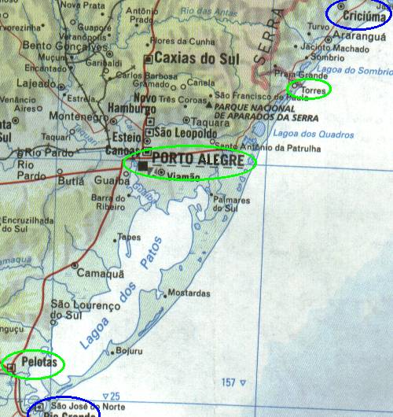

← anterior | principal | próxima →

Após dias comendo apenas "menu", finalmente fomos numa churrascaria e comemos o bom e velho churrasco brasileiro.
Imaginamos que por estarmos no rio grande do sul, a terra do churrasco, a parada seria divina. Fomos na churrascaria mais cara da cidade, o tal de lobão. Pô, as churrascarias de Curitiba são BEM mais baratas e detonam o lobão. Mas dá nada, era churrasco, valeu.
Acordamos cedo e partimos pra última puxada da viagem: pelotas-Curitiba. Estávamos loucos pra voltar pra casa, então viemos diretão.
Realmente, nos falaram e não acreditamos. as praias gaúchas são um lixo.
Torres é a mais movimentada, mas é feia igual, com aquela água marrom. é uma pena, um estado com tanto litoral ser tão palha.
A única coisa legal das praias é que são desertas e andamos bastante com a Toyota na areia, foi divertido.
Depois desse passeio pelas praias, o resto foi br 101 na cabeça até Curitiba. Foi um alívio. Que saudades do movimento, da pista de mão dupla, dos caminhões, das ultrapassagens perigosas, da falta de sinalização, das estradas esburacadas. Aí sim dirigir ficou emocionante novamente.